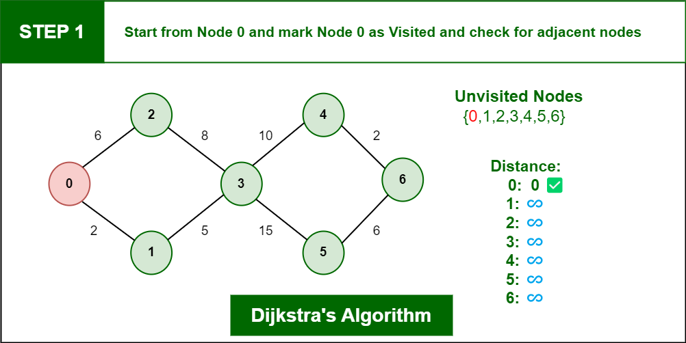

Dijkstra's Algorithm: Step-by-Step Process
What is Dijkstra's Algorithm?
Dijkstra's algorithm is used to find the shortest path from a single source node to all other nodes in a weighted graph. It is commonly used in network routing and mapping applications where you need to determine the shortest route between two points.
How the Algorithm Works
Dijkstra's algorithm works by maintaining a set of nodes whose shortest distance from the source node is known. It iteratively selects the node with the smallest tentative distance, explores its neighbors, and updates their distances if a shorter path is found.
Algorithm Example
Let's go through a simple example using a graph with 6 nodes and the following edges:
- A - B (4)
- A - C (2)
- B - C (5)
- B - D (10)
- C - E (3)
- D - F (11)
- E - D (4)
Step 1:
Start from Node 0 and mark Node as visited as you can check in below image visited Node is marked red.
Graph after initialization:
Step 2:
Check for adjacent Nodes, Now we have to choices (Either choose Node1 with distance 2 or either choose Node 2 with distance 6 ) and choose Node with minimum distance. In this step Node 1 is Minimum distance adjacent Node, so marked it as visited and add up the distance.
Step 3:
Then Move Forward and check for adjacent Node which is Node 3, so marked it as visited and add up the distance, Now the distance will be:
Step 4:
Again we have two choices for adjacent Nodes (Either we can choose Node 4 with distance 10 or either we can choose Node 5 with distance 15) so choose Node with minimum distance. In this step Node 4 is Minimum distance adjacent Node, so marked it as visited and add up the distance.
Step 5:
Again, Move Forward and check for adjacent Node which is Node 6, so marked it as visited and add up the distance, Now the distance will be:
Conclusion
By following these steps, Dijkstra's algorithm determines the shortest path from the source node to all other nodes in the graph. It is efficient for graphs without negative weights.
Next